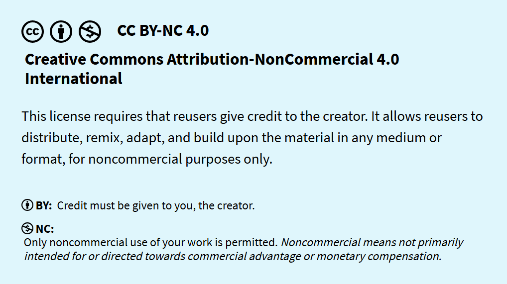

Créditos:
Este trabajo está protegido bajo la licencia de CC (Creative Commons):

Usted es libre de:
- Compartir: copiar y redistribuir el material en cualquier medio o formato.
- Adaptar : recrear, transformar o construir un material completamente nuevo a partir de este.
El propietario es incapaz de revocar estos sitios siempre y cuando sigan los términos y condiciones.
Bajo los siguientes términos:
- Atribución: Se tiene que dar el crédito apropiado hacia el autor; proporcionar un enlace hacia la licencia e indicar si se uso algún cambio, pero de ninguna manera se puede sugerir que el propietario de la licencia lo respalda a usted o a su uso.
- No Comercial: Usted no puede hacer uso del material para fines comerciales.
Sin restricciones adicionales: no puede aplicar términos legales ni medidas tecnológicas que restrinjan legalmente a otros hacer algo que la licencia permite.
Importante:
Usted no está obligado a cumplir con la licencia con los elementos de dominio público cuyo uso esté permitido por una excepción o limitación aplicable.
No se ofrecen garantías. Es posible que la licencia no le otorgue todos los permisos necesarios para el uso previsto. Por ejemplo, otros derechos, como los de publicidad, privacidad o morales, podrían limitar el uso del material.